AgentOps 위 탭 줄에서 알람 때 운영이던 V1(승인 뒤 그래프 반영 새 버전 V2가 운영이 되어 'V1 · 이전') → 띠의 운영 Run 보기(보기만) → 확인 칸이 '사람: 헛걸음'인 줄을 누름
표 위 띠의 자동 개선에서 보기 ›
보일 것
승인 뒤 1분 안에 위 탭 'V1 · 이전' · 'V2 · 운영'(그래프 반영 새 버전) · 운영 Run 표 위 띠 '사람 체크 …건 → 개선 A-1 시작' · 그 줄 확인 칸 '사람: 헛걸음' · 오른쪽 사람 체크 '헛걸음 · 앱 기록 · 시각 · 진단 통과' · 자동 개선 맨 위 줄 'A-1 · 사람 체크로 시작' — 4.6 정상(불필요 점검) 기록으로 자동 개선이 시작된 것
막히면
'사람: 헛걸음' 줄이 없거나 사람 체크가 '없음' → 3번에서 4.6을 정상으로 보냈는지 · 보고서를 확정했는지 봄 · 다음 단계로 가지 말고 문서 09로 첫 상태부터 다시
알아 둘 것
V2 탭 띠의 고정 흐름 확인 필요 ›는 누르지 않아도 됩니다. 정확도 자동 개선은 알람을 처리한 V1에서 시작하고 그 고정 흐름은 문서 04 6번에서 이미 확인했으며, 배포 승인은 고정 흐름을 보지 않습니다. 이 띠는 V2에 저장된 확인 줄이 없어서 뜨는 표시입니다(눌러도 해는 없음).
5자동 개선 — 누를 것 없이 스스로 시작 AgentOps
할 일
누를 단추가 없습니다. 그래프 반영으로 생긴 버전과 운영 Run 진단으로 자동 개선이 스스로 시작합니다
위 탭 ✦ 자동 개선 → 개선 A-1 화면의 단계 줄 ① 진단 ② 검토 ③ 시험 데이터 ④ 가설 ⑤ 후보 ⑥ 비교 ⑦ 승인 ⑧ 배포가 차례로 진행되다 '⑦ 승인 · 사람 차례'에서 멈추는 것을 봄(약 40분 · AWS(t3.large)에서는 약 1시간 반)
⑤ 후보는 후보 줄을 한 줄씩 시험합니다(줄마다 약 2 ~ 5분 · 모두 30 ~ 40분 · AWS(t3.large)에서는 줄마다 약 6분) — 앞 줄 여럿(예 줄 1 ~ 7)이 '점검 순서 반영 안 됨 — 현장 정답 못 고침' 같은 실패로 보여도 정상 · 중간에 끊지 말고 first_judge '4.3 먼저' 줄이 끝나 1등이 될 때까지 기다림 · 그동안 컴퓨터가 잠들지 않게(맥은 새 터미널에서 caffeinate -i를 켜 둠 · 노트북 덮개를 닫으면 그래도 잠듦)
보일 것
가설 표 1등 줄 '노드 first_judge · 점검 순서 CL · 4.3 먼저 · 사람이 고른 점검 4.3(추천 4.6)' → 'V3 ✦ 자동' · 위 탭 'V3 ✦ 자동 · 승인 대기'
막히면
⑤에서 더 가지 않고 ✦ 버전이 안 생김 → 기다리는 동안 컴퓨터가 잠들었음 · 잠 막기를 켜고 문서 09로 첫 상태부터 이 문서를 다시 · '③ 멈춤 · 비용 상한($… / $… — 이 서버 합계)' → .env의 LLMOPS_AUTO_BUDGET_USD를 기본 8보다 낮게 적었는지 봄 · 고친 뒤 docker compose up -d agentops(자동 개선은 같은 칸부터 이어 감)
알아 둘 것
오른쪽 판정 권고가 '보류 · 표본 부족 — 사람 판단 필요'로 나와도 ✦ 버전과 배포 승인 ▶은 생깁니다. 권고는 사람이 판단할 자료이고, 지킬 사례가 망가지지 않았는지(지킬 망가짐 0)를 함께 봅니다.
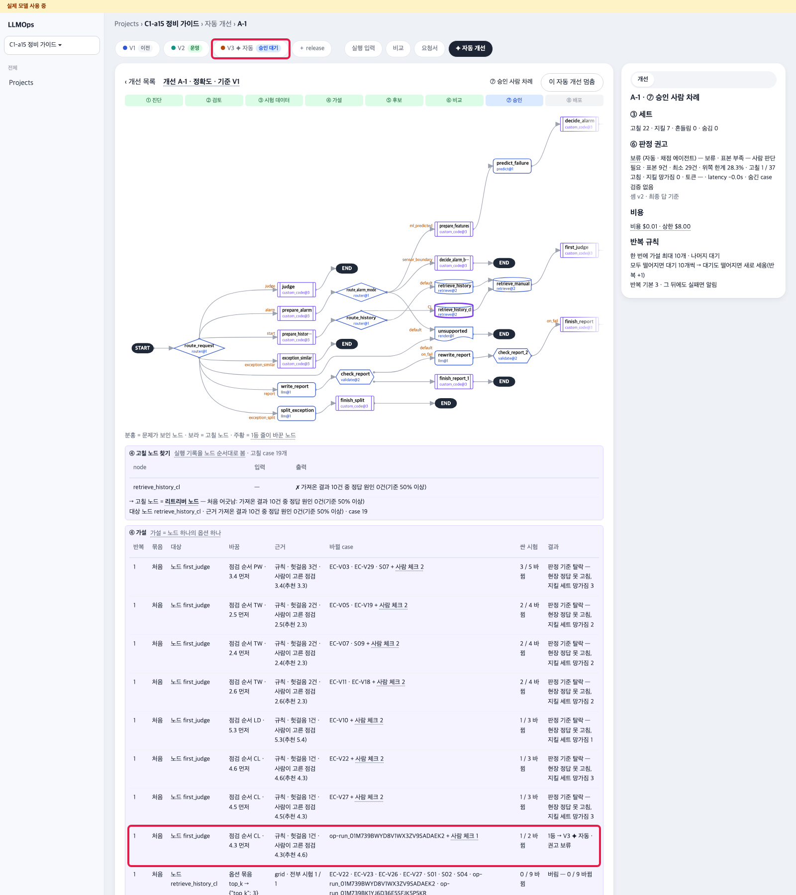
자동 개선 결과 · 빨간 테: 1등 줄 · ✦ 자동 버전
6새 버전 확정 = 배포 승인 — 창 네 단계 터미널 · AgentOps
할 일
보통 알람 한 건 먼저(아래 명령) — 운영이 V2로 바뀐 뒤 요청이 한 번은 있어야 배포 승인이 받아집니다 · 정비자 앱은 열지 않아도 됨
AgentOps 위 탭 줄의 V3 ✦ 자동 탭(상태 '승인 대기')을 누름 → 띠 'V3 · 승인 대기 · V1에서 확정 · ✦ 자동 개선 A-1 · 권고 보류'의 배포 승인 ▶(같은 띠의 고정 흐름 확인 필요 ›는 누르지 않음 — 4번 아래 설명)
'새 버전 확정' 단추는 화면에 따로 없습니다 — 이 창의 배포 승인 한 번이 V3의 채택 판정과 배포를 함께 남깁니다(창의 작은 글 '채택 판정도 함께 남음')
창 'V3(✦ 자동)를 운영으로 배포할까요?'에서 1 가설 · 2 변경 · 3 결과와 'V3이 운영이 되고, V2는 이전 버전으로 남습니다'를 읽음
칸 셋 — 올릴 서버: 미리 채워진 c1a15@local 그대로 · 결정자 별명: 칸에 다른 값(예 kg-gate)이 미리 있으면 지우고 owner-01(문서 04 6번과 같은 규칙) · 이유: 예 정확도 개선 1등 후보 배포 → 배포 승인
같은 창이 'V4 배포 단계'로 바뀌어 네 단계가 차례로 ✓ — ① 승인 ② 새 버전 저장(태그 v1 · 몇 분 '진행 중 — … 적용 대기 · 자동 감시'로 보일 수 있음 · 기다림) ③ 서버 등록(등록됨) · 셋째 ✓까지 5분 안팎(AWS(t3.large)에서는 약 20분 — ② 글에 'dry-run 통과 — 적용 대기(v1 · 사본 시험 FAILED … · 바탕 실패 2건 뺌 …)'가 보여도 정상 · 기다림) · ④ 운영 시작은 '대기'로 남아도 정상(7번 알람이 들어오면 ✓ · 그 전에 ✓가 될 때도 있음) → 닫기
scripts/app-alarm.sh M-01 # 배포 승인 전 보통 알람 한 건
보일 것
창의 ✓ 셋(승인 · 새 버전 저장 · 서버 등록) · ④ 운영 시작 '대기' · 위 탭 'V3 ✦ 자동 · 승인됨' · 새 'V4 ✦ 자동' — 'V4 · 운영'과 넷째 ✓는 7번
막히면
'배포단이 아직 이 줄로 돌지 않았습니다 — 보통 Run 한 번 뒤 다시' → 위 알람 한 건을 빠뜨림 · 알람 뒤 다시 배포 승인 · 결정자 칸 422 → 한글 · 실명 대신 별명 ID · 한 단계에서 10분(AWS 25분) 넘게 멈춤 → docker compose logs pack-server --tail 50 · 문서 10
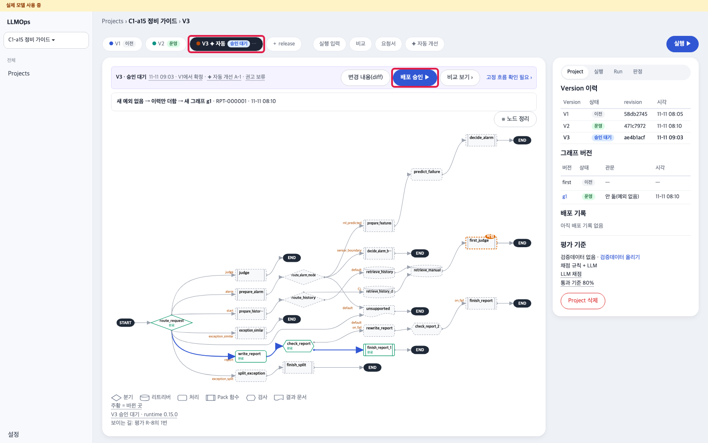
V3 띠 → 배포 승인 창 → 네 단계 · 빨간 테: V3 ✦ 자동 탭 · 배포 승인 ▶ · 결정자 별명 · 이유 · 배포 승인 · 네 단계 ✓
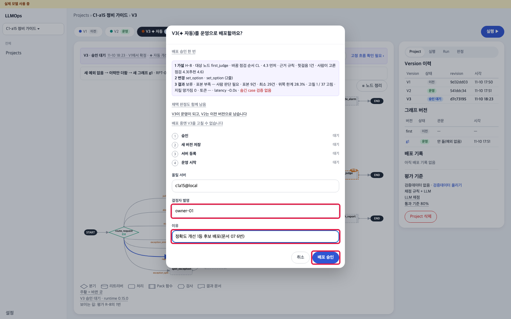
V3 띠 → 배포 승인 창 → 네 단계 · 빨간 테: V3 ✦ 자동 탭 · 배포 승인 ▶ · 결정자 별명 · 이유 · 배포 승인 · 네 단계 ✓
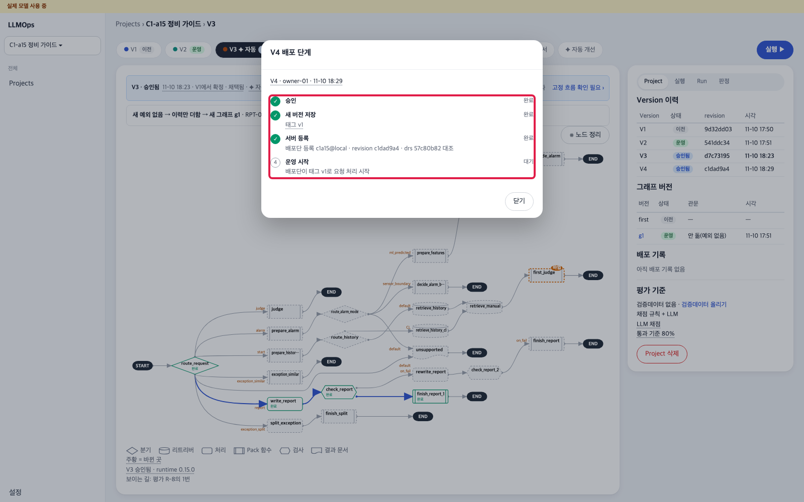
V3 띠 → 배포 승인 창 → 네 단계 · 빨간 테: V3 ✦ 자동 탭 · 배포 승인 ▶ · 결정자 별명 · 이유 · 배포 승인 · 네 단계 ✓
7같은 알람으로 확인 — 운영 시작 ✓ 터미널 · 정비자 앱 · AgentOps
할 일
2번과 같은 알람 한 건 → 정비자 앱 알람 목록 맨 위 새 알람 카드(앞 카드가 '진행 중'으로 남아 있어도 됨) 점검 시작 → 진단 보기 → 진단 화면의 다음 점검을 봄
AgentOps 새로 고침 → 위 탭 V4 ✦ 자동 → 띠 · 오른쪽 배포 기록을 봄
scripts/app-alarm.sh M-13
보일 것
다음 점검이 '흡기 필터 육안 점검' · 매뉴얼 4.3절로 바뀜 · 이유 '먼저 볼 점검으로 정해 둔 흡기 필터 육안 점검(4.3절) — 원래 냉각 설정값 확인(4.6절)' · AgentOps 'V4 ✦ 자동 · 운영' · 띠 'V4 · 운영 중' · V2로 되돌리기 · 배포 기록 ✓ 넷(승인 · 새 버전 저장 · 태그 v1 · 서버 등록 · 등록됨 · 운영 시작 · v1로 운영 시작)
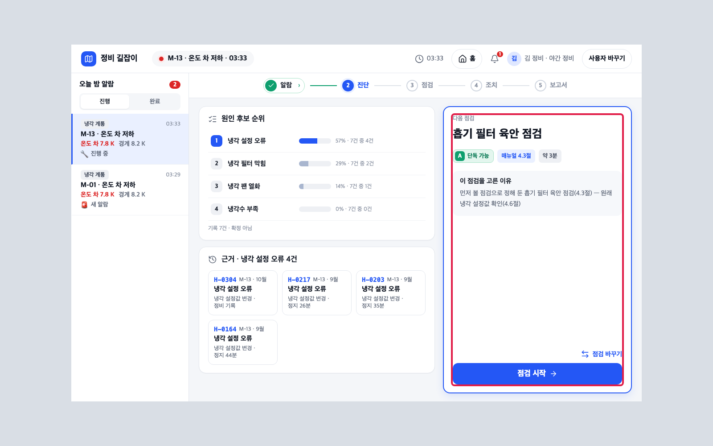
배포 뒤 진단 화면 · AgentOps 배포 기록 · 빨간 테: 다음 점검 칸 · 이유 · V4 운영 · 배포 기록 ✓ 넷
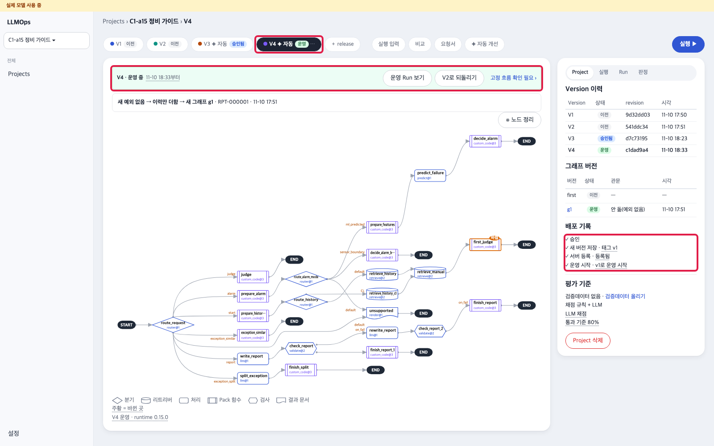
배포 뒤 진단 화면 · AgentOps 배포 기록 · 빨간 테: 다음 점검 칸 · 이유 · V4 운영 · 배포 기록 ✓ 넷
8되돌리기 — 창 세 단계 → 다시 원래대로 AgentOps · 터미널 · 정비자 앱
할 일
AgentOps 위 탭 V4 ✦ 자동(운영) → 띠의 V2로 되돌리기
창 'V2으로 되돌릴까요?'에서 '이미 등록된 V2(revision …)이 다시 운영 Version이 됩니다 · V4은 이전 Version으로 남습니다'를 읽음 → 결정자 별명 owner-01 · 이유 예 되돌리기 확인 → 되돌리기 승인
같은 창이 'V4 → V2 되돌리기 단계'로 바뀌어 세 단계가 차례로 ✓ — ① 되돌리기 승인(기록됨) ② 서버 확인(확인 끝 · 코드 · 데이터 대조) ③ 운영 시작(되돌린 버전으로 운영) · 셋 다 ✓가 될 때까지 기다림(몇 초 ~ 20초쯤) → 닫기 · 창 아래 '서버 명령 보기(복사)'는 펼치지 않아도 됨(이 저장소에서는 배포 서버가 스스로 함)
같은 알람 한 건 → 정비자 앱 알람 목록 맨 위 새 알람 카드점검 시작 → 진단 보기
scripts/app-alarm.sh M-13
보일 것
창의 ✓ 셋 · 위 탭 'V2 · 운영' · 'V4 · 이전' · 띠 'V2 · 운영 중' · 오른쪽 배포 기록 끝 줄 '✓ 되돌리기 RB-… · ✓ 3단계 · V4 → V2 · owner-01 · …' · 다음 점검이 다시 '냉각 설정값 확인' · 매뉴얼 4.6절 · 이유 숫자는 그사이 늘어난 기록만큼 2번 때와 다를 수 있음(예 '57% · 7건 중 4건')
막히면
'되돌리기 실패 — …' → 창의 다시 되돌리기 · 한 단계에서 10분 넘게 멈춤 → docker compose logs pack-server --tail 50 · 문서 10
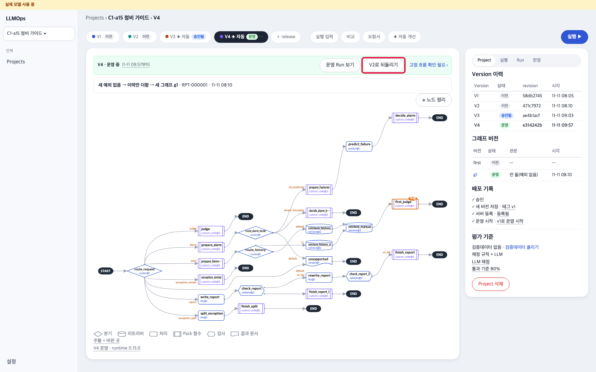
되돌리기 단추 → 창 → 세 단계 ✓ → V2 운영 → 되돌린 뒤 진단 · 빨간 테: V2로 되돌리기 · 결정자 별명 · 이유 · 되돌리기 승인 · 세 단계 ✓ · V2 운영 탭 · 다음 점검 칸
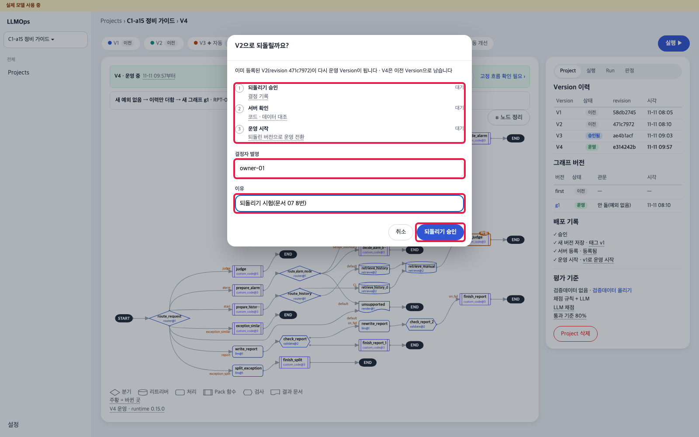
되돌리기 단추 → 창 → 세 단계 ✓ → V2 운영 → 되돌린 뒤 진단 · 빨간 테: V2로 되돌리기 · 결정자 별명 · 이유 · 되돌리기 승인 · 세 단계 ✓ · V2 운영 탭 · 다음 점검 칸
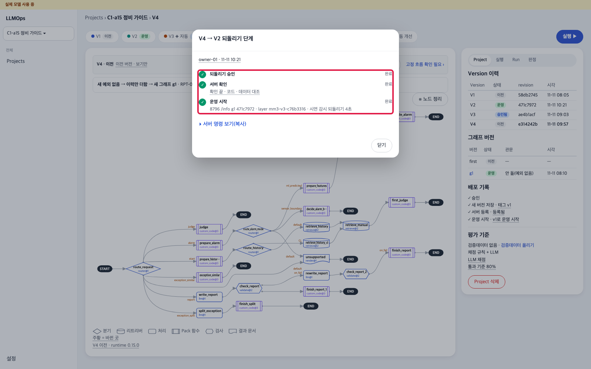
되돌리기 단추 → 창 → 세 단계 ✓ → V2 운영 → 되돌린 뒤 진단 · 빨간 테: V2로 되돌리기 · 결정자 별명 · 이유 · 되돌리기 승인 · 세 단계 ✓ · V2 운영 탭 · 다음 점검 칸
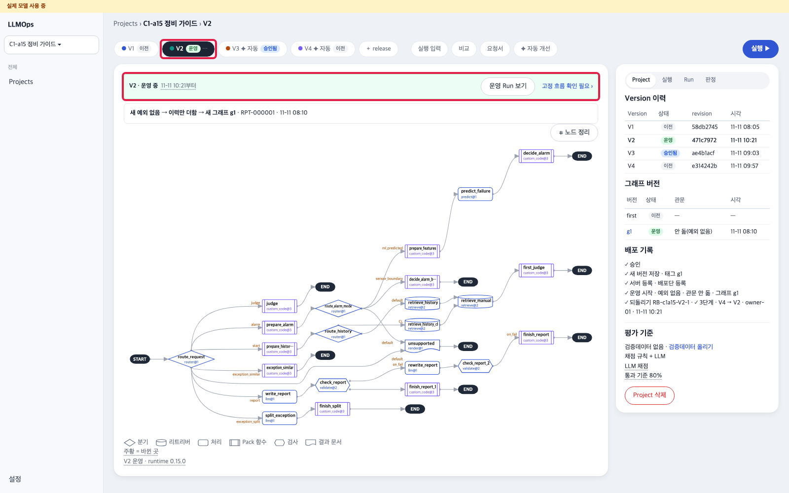
되돌리기 단추 → 창 → 세 단계 ✓ → V2 운영 → 되돌린 뒤 진단 · 빨간 테: V2로 되돌리기 · 결정자 별명 · 이유 · 되돌리기 승인 · 세 단계 ✓ · V2 운영 탭 · 다음 점검 칸
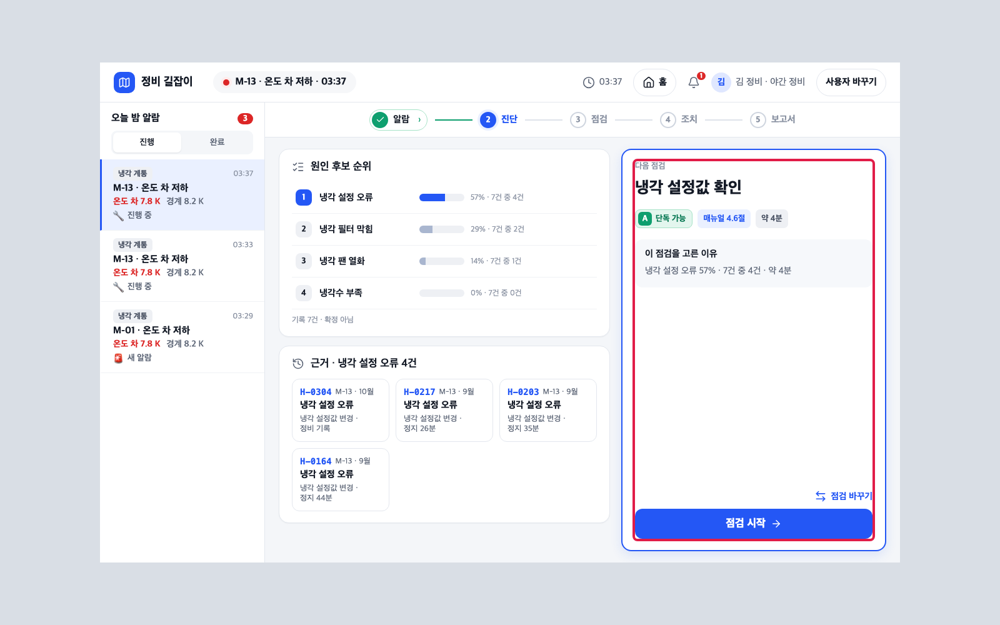
되돌리기 단추 → 창 → 세 단계 ✓ → V2 운영 → 되돌린 뒤 진단 · 빨간 테: V2로 되돌리기 · 결정자 별명 · 이유 · 되돌리기 승인 · 세 단계 ✓ · V2 운영 탭 · 다음 점검 칸
다 됐는지
☐ M-13 첫 점검 4.6 정상(헛걸음) → 보고서 확정 · 승인
☐ '사람: 헛걸음' 줄 → 개선 A-1 시작 → 'V3 ✦ 자동 · 승인 대기'
☐ 배포 승인 창 ✓ 셋 → 같은 알람 뒤 ✓ 넷 · 첫 점검 4.3
☐ V2로 되돌리기 ✓ 셋 → 첫 점검 다시 4.6
다음08 효율 — 문서 09로 첫 상태 → 04 1 ~ 8번 뒤 08 1번부터(이 문서의 배포 승인이 남은 스택에서는 08 3번 대본이 멈춤).